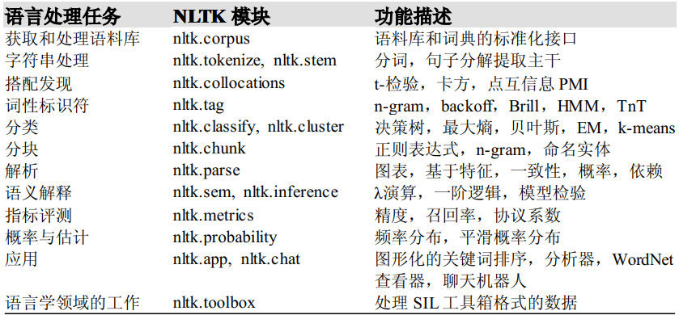
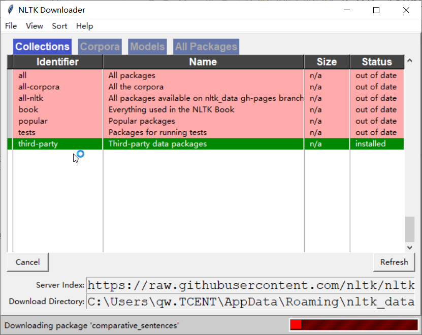
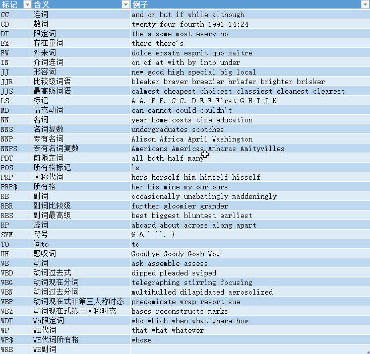
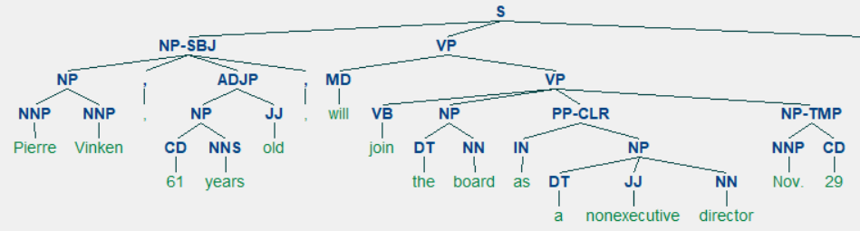
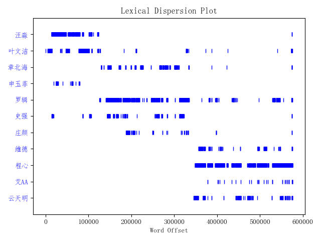
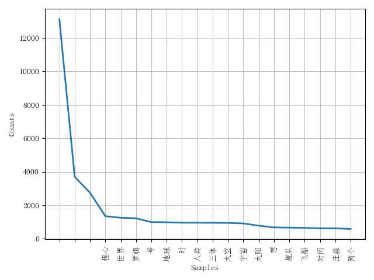

自然语言处理工具包之NLTK
目录
__
- NLTK简介
- NLTK的安装
- NLTK的使用
- 切分（分词）
- 词性标注
- 命名实体识别
- 句法分析
- WordNet的使用
- 词干提取（stemming）与词形还原（lemmatization）
- 对文本进行简单的分析
- 对文档用词进行分布统计
- NLTK自带的语料库
- 相关文章:
NLTK简介
NLTK(Natural Language Toolkit)是由宾夕法尼亚大学计算机和信息科学使用python语言实现的一种自然语言工具包，其收集的大量公开数据集、模型上提供了全面、易用的接口，涵盖了分词、词性标注(Part-Of-Speech tag, POS-tag)、命名实体识别(Named Entity Recognition, NER)、句法分析(Syntactic Parse)等各项 NLP 领域的功能。

NLTK的安装
NLTK的安装相对比较简单。仅需执行pip install nltk 即可。但是安装后还需要进一步安装所需要的一些数据（语料与模型）。
方案一：使用自带的dowmload工具进行安装
| import nltk
nltk.download()
|

也可以单独指定某个资源进行下载：
| import nltk
nltk.download("comparative_sentences")
|
目前包含的资源可以从：http://www.nltk.org/nltk_data/ 查询到。下载过程中也可以设置代理来提升下载速度：
| import nltk
nltk.set_proxy('http://proxy', ('USERNAME', 'PASSWORD'))
nltk.download("comparative_sentences")
|
方案二：离线下载好后放在指定目录
直接从 https://github.com/nltk/nltk_data 下载数据，其中packages文件下的内容即为我们想要的数据，将数据放入如下任何一个文件夹下即可。
| import nltk
for path in nltk.data.path:
print(path)
|
| C:\Users\qw.TCENT/nltk_data
D:\CodeHub\NLP\venv\nltk_data
D:\CodeHub\NLP\venv\share\nltk_data
D:\CodeHub\NLP\venv\lib\nltk_data
C:\Users\qw.TCENT\AppData\Roaming\nltk_data
C:\nltk_data
D:\nltk_data
E:\nltk_data
|
注意，将数据放入文件夹时，需要将各个目录下的.zip文件解压，否则不能正常的读取到数据。
NLTK的使用
切分（分词）
切分可以分为句子切分和词切分，nltk默认用PunktSentenceTokenizer分句，用基于宾州树库分词规范的TreebankWordTokenizer分词。具体用以下命令做到：
| import nltk
EXAMPLE_TEXT = "Hello World! Isn't it good to see you? Thanks for buying this book."
sentences = nltk.sent_tokenize(EXAMPLE_TEXT)
print(sentences) # 分句
tokens = nltk.word_tokenize(EXAMPLE_TEXT)
print(tokens) # 分词
|
默认的分词在遇到Isn’t这样的缩写(contraction)时会分成Is和n’t，如果不喜欢，可以用dir(nltk.tokenize)查看别的分词器并使用。
| for tokenize in dir(nltk.tokenize):
if "Tokenizer" in tokenize:
print(tokenize)
|
目前支持的分词器：
- BlanklineTokenizer：是RegexpTokenizer的子类，内部预设了使用正则表达式r’\s\n\s\n\s*’进行分割。
- LineTokenizer：将文本切分为行来执行切分
- MWETokenizer：该方法可对已经先保留的一些短语，或者组合，进行重组
- PunktSentenceTokenizer：Kiss&Strunk（2006）提出的无监督算法
- RegexpTokenizer：实例化RegexpTokenizer 会按照正则表达式进行findall()
- ReppTokenizer：
- SExprTokenizer：可以将字符串同时按照空格和括号切分
- SpaceTokenizer：按空格分词
- SyllableTokenizer
- TabTokenizer：根据tab进行切分
- TextTilingTokenizer
- ToktokTokenizer：
- TreebankWordTokenizer：通过分离缩略词来实现切分
- TweetTokenizer：按空格进行分词，同时针对推文一些特性，去除@用户名，保留表情等一些特殊符号。
- WhitespaceTokenizer：是RegexpTokenizer的子类 通过空格、间隔、换行等来完成，内部预设了使用正则表达式r’\s+’进行分割
- WordPunctTokenizer：通过将标点转化为一个全新的标识符来实现切分
备注：上面提到的方法不支持中文。
停用词
英文中的停用词如 “the”，“is”，“are” 等等。在自然语言处理（NLP）中没有通用的停用词列表，然而这里，在 NLTK 模块有其自带的停用词列表。
| import nltk
from nltk.corpus import stopwords
EXAMPLE_TEXT = "Hello World! Isn't it good to see you? Thanks for buying this book."
stop_words = set(stopwords.words('english'))
words = nltk.word_tokenize(EXAMPLE_TEXT)
words_filtered = []
for w in words:
if w not in stop_words:
words_filtered.append(w)
print(words_filtered)
|
词性标注
对句子进行词性标注需要先进行切分。默认使用的标记格式是宾州树库使用的，具体见此：Alphabetical list of part-of-speech tags used in the Penn Treebank Project

也可直接使用“nltk.help.upenn_tagset()”查看官方英文说明。
| import nltk
EXAMPLE_TEXT = "Hello World! Isn't it good to see you? Thanks for buying this book."
tokens = nltk.word_tokenize(EXAMPLE_TEXT)
tagged = nltk.pos_tag(tokens)
print(tagged[0:10]) # 词性标注
|
命名实体识别
命名实体识别类似于一种chunking，可以把是命名实体的部分括起来，需要在标记的文本基础上进行。
| import nltk
EXAMPLE_TEXT = "I am very excited about the next generation of Apple products."
tokens = nltk.word_tokenize(EXAMPLE_TEXT)
tagged = nltk.pos_tag(tokens)
entities = nltk.chunk.ne_chunk(tagged)
print(entities)
|
句法分析
NLTK有自带宾州树库等树库，但是自身没有对生文本进行句法分析的能力，需要调用stanford parser等外部工具。
| from nltk.corpus import treebank
t = treebank.parsed_sents('wsj_0001.mrg')[0]
t.draw()
|

tree类有很多方法可以调用，比如可以用fromstring从文本生成tree类。如何遍历tree可以见nltk的官方教程。
WordNet的使用
WordNet可以被看作是一个同义词词典。里面的词都是以同义词集合（synset）作为基本建构单位进行组织。我们可以用以下方法查看某个词的近义词，并可以用来判断这个词存不存在：
| from nltk.corpus import wordnet
# 给定词的定义和例句
syn = wordnet.synsets("pain")
print(syn[0].definition())
print(syn[0].examples())
# 同义词
synonyms = []
for syn in wordnet.synsets('Computer'):
for lemma in syn.lemmas():
synonyms.append(lemma.name())
print(synonyms)
# 反义词
antonyms = []
for syn in wordnet.synsets("small"):
for l in syn.lemmas():
if l.antonyms():
antonyms.append(l.antonyms()[0].name())
print(antonyms)
|
词干提取（stemming）与词形还原（lemmatization）
语言形态学和信息检索里，词干提取是去除词缀得到词根的过程，例如working的词干为work。搜索引擎在索引页面时就会使用这种技术，所以很多人为相同的单词写出不同的版本。词干提取的算法有很多，但最常用的算法是 Porter 提取算法。NLTK 有一个 PorterStemmer 类，使用的就是 Porter 提取算法。
| from nltk.stem import PorterStemmer
stemmer = PorterStemmer()
print(stemmer.stem('working'))
print(stemmer.stem('worked'))
|
还有其他一些提取算法，如 Lancaster 提取算法。这个算法的输出同 Porter 算法的结果在几个单词上不同。你可以尝试他们两个算法来查看有哪些不同结果。
词形还原（lemmatization）则会把词转换为最基本的词，方法如下：
| from nltk.stem import WordNetLemmatizer
lemmatizer = WordNetLemmatizer()
print(lemmatizer.lemmatize('cooking'))
print(lemmatizer.lemmatize('cooking', pos='v'))
print(lemmatizer.lemmatize('cookbooks'))
|
我们可以发现，lemma需要根据词性来进行还原，比如cooking作为名词，它本身就是一个lemma，而做动词使用时lemma是cook。所以像斯坦福CoreNLP进行词形还原时都需要先进行词性标注。
词干提取和词形还原的主要差别还可以从以下例子中看出：
| from nltk.stem import PorterStemmer, WordNetLemmatizer
stemmer = PorterStemmer()
lemmatizer = WordNetLemmatizer()
print(stemmer.stem('believes')) # believ
print(lemmatizer.lemmatize('believes')) # belief
|
词干提取的方法可以在不知道语境的情况下对词汇使用，这就是为什么它相较词形还原方法速度更快但准确率更低。在我看来，词形还原比提取词干的方法更好。词形还原，如果实在无法返回这个词的变形，也会返回另一个真正的单词;这个单词可能是一个同义词，但不管怎样这是一个真正的单词。当有时候，你不关心准确度，需要的只是速度。在这种情况下，词干提取的方法更好。
对文本进行简单的分析
nltk.text.Text()
nltk.text.Text()类用于对文本进行初级的统计与分析，它接受一个词的列表作为参数。Text类提供了下列方法。
- Text(words) 对象构造
- concordance(word, width=79, lines=25)：显示word出现的上下文
- common_contexts(words)：显示words出现的相同模式
- similar(word)：显示word的相似词
- collocations(num=20, window_size=2)：显示最常见的二词搭配
- count(word)：word出现的词数
- dispersion_plot(words)：绘制words中文档中出现的位置图
- vocab()：返回文章去重的词典
示例1：
| import nltk
import jieba
novel_data = open('data/三体(刘慈欣).txt', encoding='utf-8').read()
text = nltk.text.Text(jieba.lcut(novel_data))
print(text.concordance(word='三体', width=20, lines=10)) # 打印宽度20字符，共10行的上下文
print(text.similar(word='地球', num=10))
print(text.common_contexts(['世界', '宇宙'])) # 多个词的上下文
print(text.count(word='三体')) # 统计词语频数
text.generate(text_seed=['地球', '三体'], length=30) # 造句
|
示例2：
| import nltk
import jieba
from pylab import mpl
mpl.rcParams['font.sans-serif'] = ['FangSong'] # 指定默认字体
mpl.rcParams['axes.unicode_minus'] = False # 解决保存图像是负号'-'显示为方块的问题
words = ['汪淼', '叶文洁', '章北海', '申玉菲', '罗辑', '史强', '庄颜', '维德', '程心', '艾AA', '云天明']
for w in words:
jieba.add_word(w) # 添加自定义词典
novel_data = open('data/三体(刘慈欣).txt', encoding='utf-8').read()
text = nltk.text.Text(jieba.lcut(novel_data))
text.dispersion_plot(words)
|

画出三体人物出现位置，横坐标为每个词出现在text中的索引位置从图中基本上可以看出每个人物的出现在小说中的顺序。
- 汪淼和叶文洁出现在《三体》开头
- 罗辑几乎贯穿《三体》
- 维德、程心、云天明出现在《三体》末尾
nltk.text.TextCollection
nltk.text.TextCollection类是Text的集合，提供下列方法
- text.TextCollection([text1,text2,])：对象构造
- idf(term)：计算词term在语料库中的逆文档频率，即log总文章数文中出现term的文章数log总文章数文中出现term的文章数
- tf(term,text)：统计term在text中的词频
- tf_idf(term,text)：计算term在句子中的tf_idf,即tf*idf
示例3：计算某个词与其他所有词的相似度
| import nltk
import jieba
novel_data = open('data/三体(刘慈欣).txt', encoding='utf-8').read()
content_index = nltk.text.ContextIndex(jieba.lcut(novel_data))
similarity_scores = content_index.word_similarity_dict(word='三体')
for key, value in similarity_scores.items():
if value > 0.05:
print(key, value)
|
示例4：计算TF-IDF
| import nltk
import jieba
novel_data = open('data/三体(刘慈欣).txt', encoding='utf-8').read()
word_list = jieba.lcut(novel_data)
text = "".join(word_list)
my_text = nltk.text.TextCollection(word_list)
print(my_text.idf("三体"))
print(my_text.tf("三体", text))
print(my_text.tf_idf("三体", text))
|
对文档用词进行分布统计
FreqDist类
这个类主要记录了每个词出现的次数，根据统计数据生成表格，或绘图。其结构很简单，用一个有序词典进行实现。所以dict类型的方法在此类也是适用的。如keys()等。
- B()：返回词典的长度
- plot(title,cumulative=False)：绘制频率分布图，若cumu为True，则是累积频率分布图
- tabulate()：生成频率分布的表格形式
- most_common()：返回出现次数最频繁的词与频度
- hapaxes()：返回只出现过一次的词
示例：
| import nltk
import jieba
from pylab import mpl
mpl.rcParams['font.sans-serif'] = ['FangSong'] # 指定默认字体
mpl.rcParams['axes.unicode_minus'] = False # 解决保存图像是负号'-'显示为方块的问题
novel_data = open('data/三体(刘慈欣).txt', encoding='utf-8').read()
stopwords = open('data/CNENstopwords.txt', encoding='utf-8').read().splitlines()
word_list = jieba.lcut(novel_data)
new_list = []
for w in word_list:
if w not in stopwords:
new_list.append(w)
fdist = nltk.FreqDist(new_list)
print(fdist.keys()) # 打印词语列表
print(fdist.items()) # 打印词语与频数对
print(fdist.most_common(20)) # 打印频数最高的词
print(fdist.N()) # 词语总数
print(fdist.max()) # 打印出现次数最多的词语
print(fdist['三体']) # 输出某个词的出现次数
print(fdist.freq('三体')) # 计算词频
fdist.plot(20, cumulative=False) # 绘制前20个词频数累计图
|

NLTK自带的语料库
在nltk.corpus包下，提供了几类标注好的语料库：
- gutenberg：一个有若干万部的小说语料库，多是古典作品
- webtext：收集的网络广告等内容
- nps_chat：有上万条聊天消息语料库，即时聊天消息为主
- brown：一个百万词级的英语语料库，按文体进行分类
- reuters：路透社语料库，上万篇新闻方档，约有1百万字，分90个主题，并分为训练集和测试集两组
- inaugural：演讲语料库，几十个文本，都是总统演说
语料库处理：
- fileids()：返回语料库中文件名列表
- fileids[categories]：返回指定类别的文件名列表
- raw(fid=[c1,c2])：返回指定文件名的文本字符串
- raw(catergories=[])：返回指定分类的原始文本
- sents(fid=[c1,c2])：返回指定文件名的语句列表
- sents(catergories=[c1,c2])：按分类返回语句列表
- words(filename)：返回指定文件名的单词列表
- words(catogories=[])：返回指定分类的单词列表
参考链接：
相关文章:
- Word2vec实战：中文维基百科语料训练
- Python解析拼音输入法词库
- Facebook词向量工具FastText
- 腾讯AI Lab中文词向量数据使用
- 自然语言处理之自动摘要